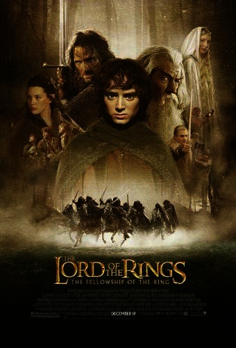
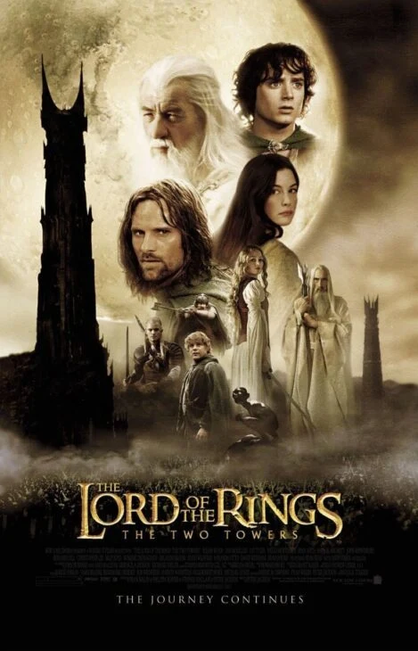
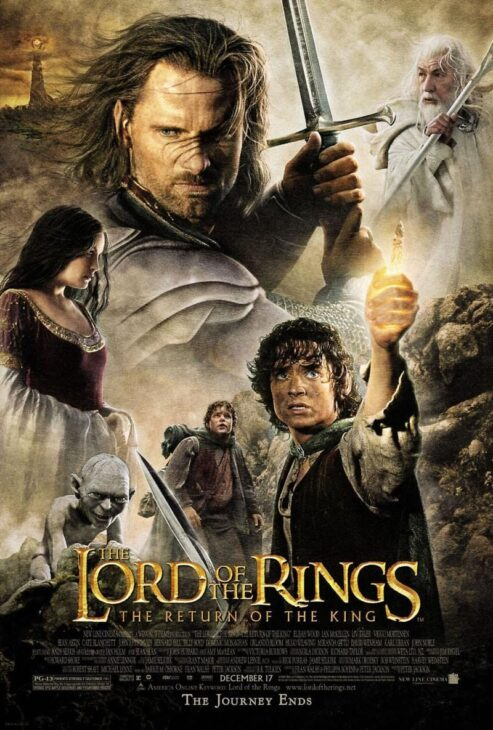

A Sociedade do Anel
Frodo parte do Condado com a missão de destruir o Um Anel, acompanhado por aliados de diferentes povos da Terra-média.

Uma jornada pela Terra-média
Quando Frodo Bolseiro recebe o Um Anel, descobre que precisa levá-lo até a Montanha da Perdição para impedir que Sauron domine a Terra-média. Com a ajuda de aliados de diferentes povos, começa uma jornada de coragem, amizade e esperança.

Frodo parte do Condado com a missão de destruir o Um Anel, acompanhado por aliados de diferentes povos da Terra-média.

Com a Sociedade separada, cada grupo enfrenta novos perigos enquanto a guerra pelo destino da Terra-média se aproxima.

Frodo e Sam seguem rumo à Montanha da Perdição enquanto seus companheiros lutam pela esperança dos povos livres.
A saga cinematográfica é formada por três longas: A Sociedade do Anel, As Duas Torres e O Retorno do Rei.
As três produções foram filmadas como um grande projeto, mantendo o mesmo elenco ao longo da jornada.
Os filmes conquistaram juntos 17 prêmios Oscar, reconhecimento marcante para uma trilogia de fantasia.
A Terra-média combina povos, idiomas e lugares imaginados por Tolkien e continua inspirando novas gerações.
Imagem de paisagem: Unsplash.